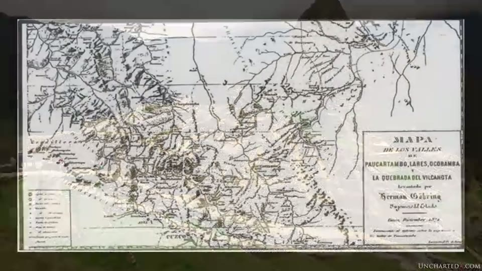
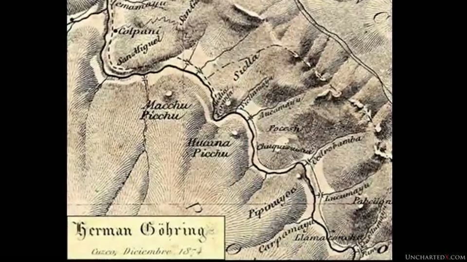
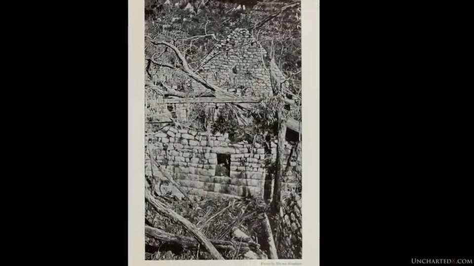
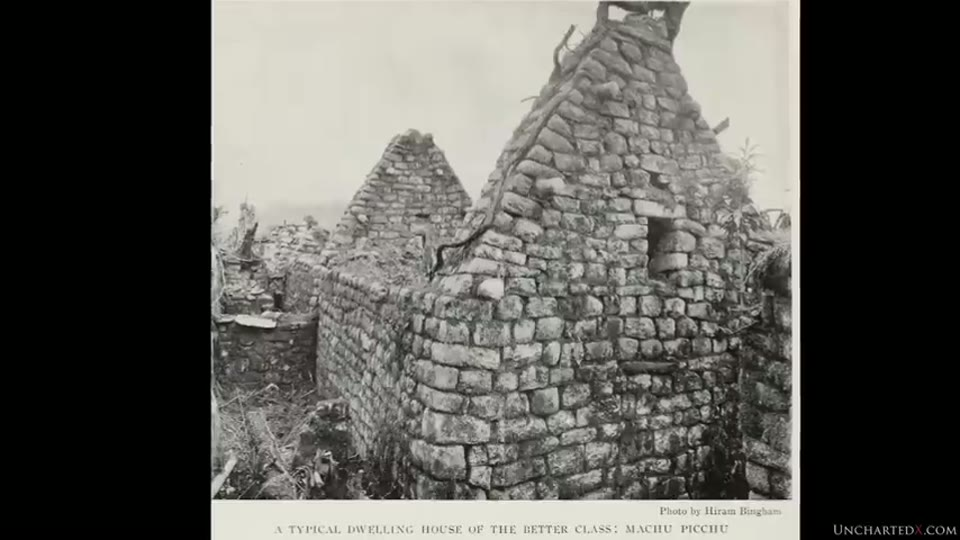
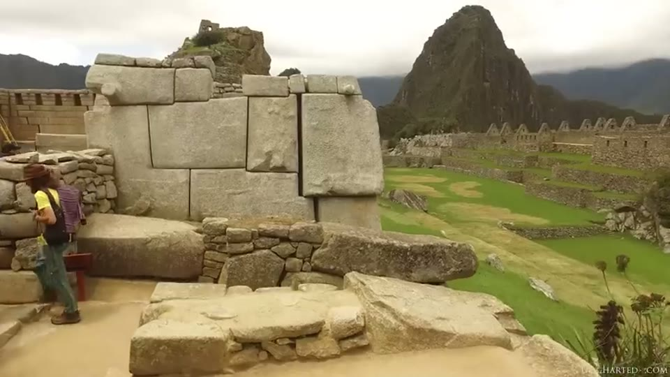
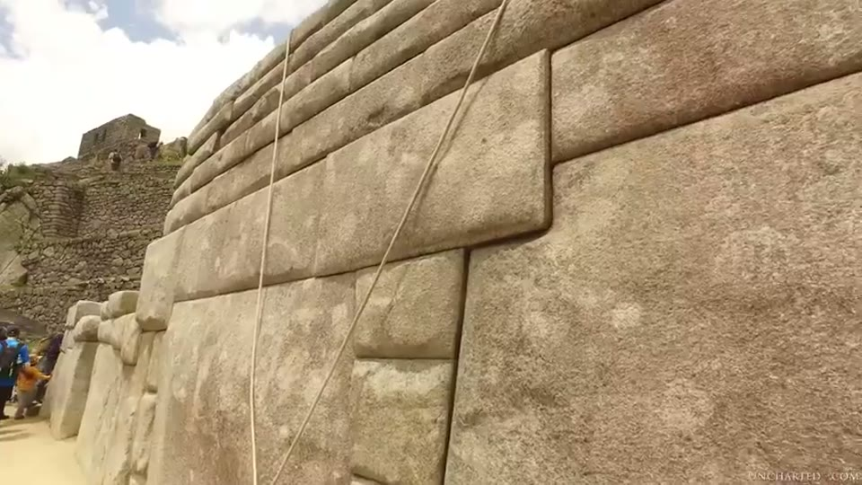
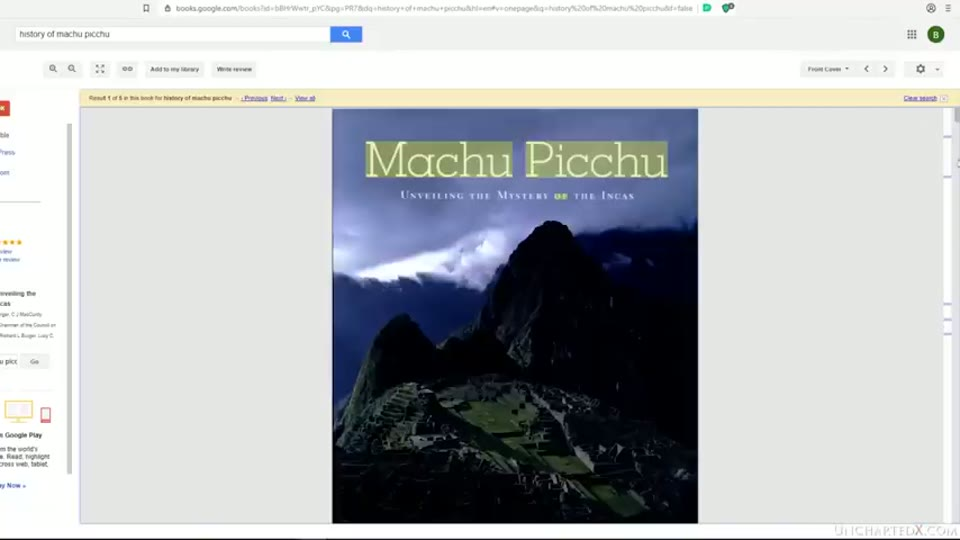
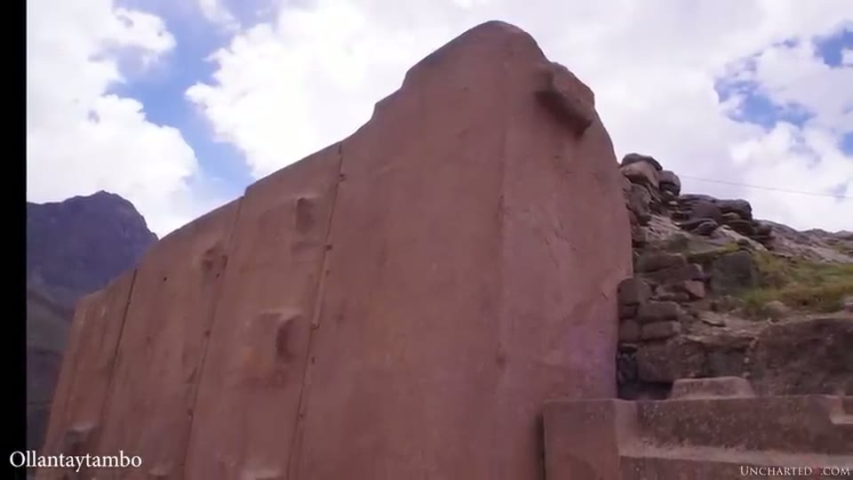
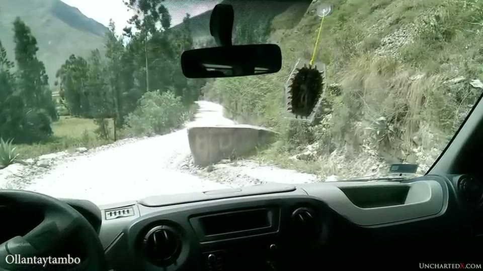
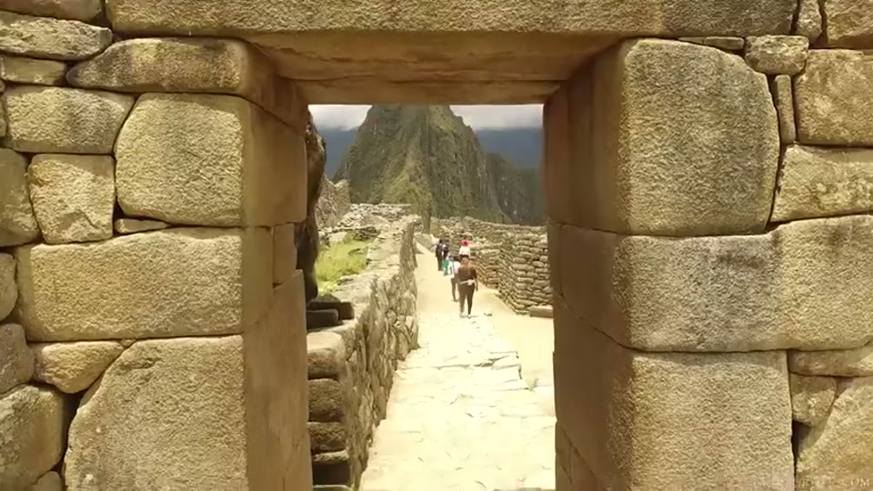

UnchartedX
The Origins of Machu Picchu...
Ben · 49 min · watch on YouTube · summarised 2026-09-29
The first of two parts — Ben says at the end that a second video covering the site's architecture in detail, including the alignments of the Intihuatana stone, was cut out of this one to keep it under an hour and a half 46:32–47:00. What is here is the history: how the site was brought to attention, what the accepted construction date actually rests on, and what the Inca are recorded as having said about their own origins.
The proposition is put carefully and is narrower than the title suggests. The Inca lived at Machu Picchu and worked on it; nobody disputes that, and Ben does not. What he questions is whether they built the megalithic core [01:03–01:31, 28:18–28:47].
Two facts about the place, stated to correct the record
Both are the kind that can be checked in a minute and both cut against the site's reputation [01:59–03:24, 05:17–06:41].
It is not a high-altitude site. Machu Picchu sits at about 7,970 ft / 2,430 m. Cusco is at about 11,200 ft / 3,400 m, and many of the better-known sites in the region are past 12,000 and 13,000 ft. Ben calls the belief that Machu Picchu is very high up a misconception he hears often, and notes that its lower elevation is what allows the tropical ecosystem there.
Hiram Bingham did not discover it. In 1911 he was led to it by locals who were already living on the site. He was searching for Vilcabamba, the last Inca refuge, not for this. Ben lists what came before him:
- Peruvian farmers living at the site, three families according to Bingham's own account
- an inscription on a block left by the Peruvian explorer Agustín Lizárraga in 1902, which Ben says one of Bingham's own photographs shows
- reports from missionaries and explorers of the previous century
- a map of 1874 on which Machu Picchu and the neighbouring peak of Huayna Picchu are both marked
The narration calls the map only "a German map that dates back to 1874", but it is filmed with its title cartouche legible, and that names it completely: Mapa de los Valles de Paucartambo, Lares, Ocobamba y la Quebrada del Vilcanota, drawn up by Herman Göhring, state engineer, at Cusco in December 1874. In the detail shown, the two peaks are lettered "Macchu Picchu" and "Huaina Picchu" on adjacent summits, with the river and a dozen other place names around them.


That Machu Picchu was mapped by name 37 years before Bingham reached it.
What Ben credits Bingham with instead is the first scientific exploration: months of clearing, photographing and excavating, which is what made the site known. He also notes that Bingham knew perfectly well he was not first, and quotes him on having spent "two days of one workman's time in erasing from the beautiful granite walls the crude charcoal autographs of visiting Peruvians, one of whom had taken the pains to scrawl in huge letters his name in 33 places."
The Lizárraga inscription is on screen, but not as a page from Bingham. What is shown is a screenshot of a Spanish-language blog post dated 17 July 2012, headed "LA FOTO QUE OCULTÓ HIRAM BINGHAM" — the photo Hiram Bingham hid — reproducing a black-and-white photograph of marks scratched into a block. The lettering in it is not legible at the resolution shown.

That a Peruvian explorer left his name on a block at the site in 1902.


What the site looked like before it was cleared, and the rough masonry the video attributes to the Inca.
The three styles, again
Ben uses the same classification here that runs the Sacsayhuamán video — Jesús Gamarra's three architectural styles — and points viewers to an earlier video of his, Why the Megalithic Architecture of Peru is Older than the Inca, for the background 14:02–16:45.
| style | what it is | where it sits |
|---|---|---|
| Hanan Pacha | shapes and carvings made into the living rock of the mountainside | lowest layers; often built upon or surrounded by later work |
| Uran Pacha | the classic megalithic style — cellular polygonal masonry, very large and precisely fitted, usually one uniform stone type brought from a distance | on top of or around the Hanan Pacha work |
| Ukun Pacha | loose rock walls, rough masonry, functional but imprecise, sometimes with mud mortar | on top of the other two |
His reading of Machu Picchu on that scheme is explicit and gives most of the site to the Inca: "the majority of the buildings at Machu Picchu are Ukun Pacha… I think the majority of the work here was done by the Inca, but not the megalithic core."
The same classification carries the whole of the Sacsayhuamán entry, where Ben is equally explicit that he takes Gamarra's categories while declining most of his other conclusions.


Two different qualities of stonework at Machu Picchu, which is what the whole argument rests on.
He adds that he thinks most of the rough buildings were once rendered in mud mortar, which has since been lost — "I think most of this has fallen away now due to erosion and rain and moisture" — and points to a Bingham photograph showing walls that still had it. The plate is shown with its caption, and the caption is a narrower statement than the narration: "Some of the houses were lined with such beautiful stone work as to require no other finish. In others it seems probable that the roughly finished stones were covered with some kind of mud or plaster. The picture shows the only house in Machu Picchu where considerable portions of this plaster still remain on the walls." That was already the position in Bingham's own time.

That rough Inca walls were rendered in mud plaster, of which little survives.
Following the date back to what it rests on
This is the section the video is built around, and it is done as a trail 27:51–34:49, with each source opened on screen.
Step one. The Wikipedia article is shown in the browser. Its History section reads "Machu Picchu was built starting 1450–1460", and the infobox beside it gives Founded c. 1450, Abandoned 1572, Height 2,430 metres — which is where Ben's elevation figure comes from. The page attributes the construction to two rulers, Pachacutec Inca Yupanqui (1438–1471) and Túpac Inca Yupanqui (1472–1493); the narration mentions only Pachacuti.

The construction date in the form most readers meet it.
Step two. That claim's reference is an archaeological textbook, Machu Picchu: Unveiling the Mystery of the Incas, edited by Richard L. Burger, professor of anthropology at Yale, and Lucy C. Salazar, published 2004. Ben opens it on Google Books and reads from page 27. Its language is softer than Wikipedia's: "The area had been only lightly settled before the Inca conquest, and it seems reasonable to suggest that Machu Picchu, built sometime between 1450 and 1470, had been in use for only some eighty years when Tahuantinsuyu crumbled and the site was abandoned." On the page, that sentence opens immediately after a citation — "pottery (Bauer 1999)" — which the narration does not read out.


The textbook that date traces back to, and the sentence in it.
Step three. What the book gives as the basis, quoted directly: "Rowe's hypothesis that Machu Picchu was founded by Pachacuti is consistent with our preliminary ceramic analysis indicating the absence of Killke, Lucre and the other ceramic pottery styles immediately antecedent to the Imperial Cusco style of Inca pottery."
Ben's response to it is the part worth quoting in full, because he concedes the analysis entirely:
"I want to be clear here. All this passage indicates is that the Inca did in fact live here, likely beginning in the period around 1450 to 1470, as the pottery matches that found on other Inca sites from that period — or rather, they didn't find any pottery that comes from the period before these days. Now, I'm not disputing any of that. I'm quite sure it's correct… However, this analysis says nothing about the architecture of the site, nor the age of the original construction."
He sets the 80-year figure against Bingham's own impression, formed after four months on the site: "since they had no iron or steel tools, only stone hammers, its construction must have cost many generations if not centuries of effort" 26:28–27:51.
The surrounding context he gives for the Inca themselves 29:17–30:41: a civilisation beginning somewhere in the 1200s, getting going in the 1400s under Pachacuti, ended by the Spanish with the fall of the last stronghold in 1572 — around 150 years at its peak — with no iron or steel tools, no practical use of the wheel and no known form of writing. He also notes that almost all Inca records were destroyed in the conquest, which is why there are no contemporary chroniclers to cross-check against, as there are for Egypt, Greece and Rome.
The passage from Bingham's book
Ben says finding it "quite literally left me sitting stunned in my chair for a few seconds" 35:18–37:36. It is from In the Wonderland of Peru (1913) — the title page is filmed, and subtitles the volume The Work Accomplished by the Peruvian Expedition of 1912, Under the Auspices of Yale University and the National Geographic Society. The passage sits under the book's own printed heading, An Ancient Inca Tradition, and is Bingham reporting a story given to early Spanish chroniclers:
"Thousands of years ago there lived in the highlands of Peru a megalithic folk who developed a remarkable civilization and who left as architectural records such cyclopean structures as the fortresses of Sacsayhuamán and Ollantaytambo. These people were attacked by barbarian hordes coming from the south, possibly from the Argentine pampas. They were defeated and fled into one of the most inaccessible Andean canyons… the chief place was called Tampu-tocco. Eventually regaining their military strength and becoming crowded in this mountainous valley, they left Tampu-tocco and, under the leadership of three brothers, went out of three windows or caves and started for Cusco… and there they established the Inca kingdom."

The Inca tradition, recorded in 1913, that attributes the megalithic sites to an earlier people.
Two features of it are what Ben draws attention to. The timeline runs to thousands of years plus several centuries in the canyon plus several more migrating, which is far longer than the orthodox account. And the story itself attributes Sacsayhuamán and Ollantaytambo not to the Inca but to an earlier people.
He is direct about what it is worth: "although this account is essentially hearsay", and he adds that Bingham had nothing to gain by inventing it and did not himself take the origin story literally. His explanation for that is that Bingham, like Flinders Petrie in Egypt, was working without the framework that would make it seem plausible — no established 300,000-year span for the species, no ancient DNA, and no Younger Dryas 38:32–40:23.
Bingham noticing the joint himself
The one place in the video where the two-industries observation comes from the orthodox side is Rumicolca 41:46–42:45. Ben shows a Bingham plate, and both the photograph and its caption are legible. The plate is headed An Architectural Puzzle: Rumi Ccolca and reads:
"A nearer view of Rumi Ccolca shows the junction of two entirely different kinds of stonework. The original wall is of rough stones laid in mud, but the gateway is lined with cut stones fitted together without mortar after the best Inca style. It may be possible that a later race cut a gate through the ancient aqueduct and lined it in their own fashion with their best stonework."
The photograph has both in one frame: a panel of large, smooth, regularly coursed blocks with a man standing in the gap, and immediately beside it a wall of rough irregular field stones. The reading Bingham puts on it is the reverse of Ben's — the rough wall is the older one there, with the fine work inserted later — and Ben shows it as evidence that the difference in workmanship was visible to the site's first scientific investigator.

Two entirely different kinds of stonework meeting in one wall, noticed by the site's first scientific investigator.
Moving the stones, and a comparison with 1911
A digression Ben makes deliberately 23:11–25:05. Bingham had to cut a trail up more than 2,000 vertical feet, rebuild a washed-out bridge over the Urubamba, and swim mules across rivers, all to get 60-pound boxes of food to the site. Against that he sets Ollantaytambo: granite blocks of around 50 tons, some up to 80, quarried high on a neighbouring mountain, brought down a steep slope, across the river, and up another mountain.

The size of the blocks that had to be brought across a valley and up a mountain.
He also mentions a block from the same quarry left on the road below the site — "the road was actually built around this stone, because we certainly weren't moving it for a road." That one is filmed, from inside a moving vehicle: a large squared block standing in the middle of a dirt track with the road passing either side of it.

A block too heavy to move, which a modern road was routed around.
The Foerster clip
Brien Foerster appears twice, and at 43:14–45:10 makes the recycling argument directly: the Inca "recycled some of the damaged structures from the early megalithic builders", using whatever was available, and were "incredibly respectful" of what was already there — never removing a surface, but reusing anything already lying on the ground. He offers Ollantaytambo, Machu Picchu and Sacsayhuamán as the classic examples.
He then makes a stronger and more specific claim about the earlier builders: that they selected stone with high quartz or iron content, and that any one structure was built from a single quarry — they never mixed stone. His examples are a basalt said to come from one quarry 50 km away, and the limestone at Sacsayhuamán from a quarry 10 to 15 km off. The whole passage is delivered to camera in a village plaza in front of a colonial church; no megalithic stonework appears in frame while it is made.
The reuse claim does have an image behind it elsewhere, at 42:45–43:14: a trapezoidal doorway at Machu Picchu whose lintel and jambs are large dressed blocks, set into a wall of much smaller rough stones.

Large dressed blocks set into a wall of much smaller rough ones.
The earlier clip, at 08:08–13:32, is a Peruvian guide describing Bingham's search for Vilcabamba and the families he found living on the terraces, farming coffee, passion fruit, coca and sweet potatoes among the buildings.
Where Ben lands
Stated as his own interpretation and flagged as such [42:45–43:14, 45:10–46:05]:
"Personally, I think it's much more likely that this megalithic construction was done in the very distant past, as suggested by the Inca origin story. I think that most of it was destroyed in some form of cataclysm, perhaps even the Younger Dryas, but there are certainly other contenders that happened on other dates. I think that the Inca rebuilt what they could, they repaired what they could, and they reused the megalithic stone in their own constructions."
His closing formulation is weaker than that: that parts of the site being vastly older than the Inca is "certainly possible, if not even likely", that the interpretation is consistent with the Inca's own origin account and with work in paleoclimatology, geology and genetics, and that "circumstantial though much of it may be", it deserves more mainstream discussion. Earlier he puts the position more plainly still: "I think that the real answer to this question today should be, we just don't know for sure."
What you can check yourself
- The elevations. Machu Picchu at about 2,430 m against Cusco at about 3,400 m — the first is on the Wikipedia infobox shown in the video, and both are public.
- The reference trail. Every link in it is filmed: the Wikipedia article with its 1450–1460 statement, the Google Books scan of Burger and Salazar's 2004 volume, and page 27 with the quoted passage highlighted. The trail can be walked again from the same sources.
- What the ceramic analysis covers. The quoted passage names the pottery styles it looked for — Killke, Lucre — and says what their absence indicates. It can be read against the claim built on it, as can the "(Bauer 1999)" citation visible at the start of the sentence.
- The Göhring map of 1874. Fully identified on screen by title, cartographer and place of drawing, and Machu Picchu and Huayna Picchu are lettered on it.
- **Bingham's In the Wonderland of Peru.** 1913, quoted at length, with the title page and several plates filmed with their captions readable — the origin story, the Rumi Ccolca puzzle, the stucco plate.
- The three styles on the site. Whether the megalithic core and the rough masonry around it are visibly different kinds of work is a judgement any visitor or photograph can be put to, and one frame in this video has both in it.
- Rumicolca. A standing structure with the junction Bingham described; the caption's reading and Ben's are different and both are on the page.
What the video does not settle
- No date is offered for the megalithic work, and Ben says so. The argument is that the accepted date covers the occupation rather than the construction. Nothing in the video dates the stonework, and his own summary is "we just don't know for sure" and "circumstantial though much of it may be".
- The pottery analysis is not contested. Ben states he is sure it is correct. The disagreement is over its scope, not its result.
- The three-style classification is adopted, not tested. It comes from Gamarra, its background is in a different video, and no criterion for sorting a given wall into one of the three is given here.
- The origin story is hearsay at two removes. It reaches Bingham from early Spanish chroniclers and reaches the video from Bingham. No chronicler is named, no earlier source is cited, and Ben says Bingham did not take it literally.
- The mud-mortar claim and the plate behind it do not say the same thing. The narration has most of the rough buildings once rendered, with the render since lost to weather. Bingham's caption on the photograph shown calls it the only house at Machu Picchu where considerable plaster still remained, which is a statement about 1912.
- The Lizárraga photograph is at one remove and is not legible. What is on screen is a 2012 blog post reproducing it, not a page from Bingham, and the inscription itself cannot be read in the frame.
- The Ollantaytambo quarry is not in the shot said to show it. The narration says Graham Hancock can be seen pointing to it; the frame is a man pointing across a wide green valley at a far mountainside, with no quarry distinguishable.
- The cataclysm is "perhaps". The Younger Dryas is offered as one candidate among unnamed others, as Ben's own view, and with no evidence from this site attached to it.
- The genetic and paleoclimate support is unnamed. "Recent DNA studies", "a modern analysis of male DNA" and the 300,000-year figure for the species are all invoked without a study, author or date.
- Michael Shermer is cited as "beginning to change their tune" with no quotation, date or source for the change.
- Foerster's single-quarry rule is asserted, not demonstrated. No count of structures, no list of quarries and no source accompanies "they never mix the stone"; the two distances he gives — 50 km and 10 to 15 km — are spoken rather than measured on screen; and nothing he is describing is in frame while he describes it.
- The Ollantaytambo weights are stated without a source. 50 tons, some up to 80.
- Bingham's "many generations if not centuries" is an impression, and he says so — the sentence Ben quotes begins "although it is too early to speak definitely".
- The Rumicolca caption argues the opposite direction to the video and the video does not reconcile them: Bingham has the rough wall as the original and the fine gateway as the later insertion by "a later race".
- The Wikipedia page shown says more than the narration reports. It credits the construction to two rulers across 1438–1493, not one, which is a longer building period than the summary of it given aloud.
- The architecture is mostly not in this video. The detailed look at the site's stonework, and the Intihuatana alignment material, are in a second video Ben says was cut out of this one.
Names
The auto-caption track on this 2020 upload is the unpunctuated kind and it mangles most of the proper nouns in the video, including the site's own name, which arrives as "much who picked you" throughout. The following are reconstructions rather than things heard or read on screen, except where noted, and are flagged accordingly:
| written here | as the captions give it |
|---|---|
| Machu Picchu | "much who picked you", "much' picture", "magic picture" |
| Huayna Picchu | "Kawana Picchu" |
| Jesús Gamarra | "hey-zeus Kamara" |
| Hanan Pacha, Uran Pacha, Ukun Pacha | "Han and pocha", "una and pata" / "Oran patcher", "you can putter" / "Kenpachi" |
| Urubamba | "orang bomba", "Aran Bumbo", "Ihram bomba" |
| Vilcabamba | "Bilka bomba", "Bilka bamba" |
| Pachacuti | "Patrick UT" |
| Tawantinsuyu | "to whom in 10 sue you" |
| Tampu-tocco, Paccari-tambo | "tamp otaku", "parakeet Ambu" |
| Brien Foerster | "Brian Forester", "Brian Forrester" |
| Ollantaytambo | "al ante Tambo", "Oh ante Tambo" |
| Rumicolca | "Rumi Cola" |
Four came off the screen rather than out of the audio and are not reconstructions: Herman Göhring and the title of his 1874 map, read from its cartouche; Rumi Ccolca, which is the spelling on Bingham's plate; Tahuantinsuyu, as printed on page 27 of Burger and Salazar; and Pachacutec Inca Yupanqui and Túpac Inca Yupanqui, from the Wikipedia page filmed.
The Peruvian guide in the first clip is named in the narration as "Roy Elio" and the spelling has not been verified against anything on screen.
Ben acknowledges the difficulty himself, twice, and the video ends with a short coda in which the guide explains why the pronunciation of the site's name matters — that the vowel distinguishes it from a word with an entirely different meaning 48:17–48:55. The Wikipedia page shown earlier carries the same point in its Etymology section, which gives machu as "old" or "old person" and pikchu as either "portion of coca being chewed" or "pyramid, pointed multi-sided solid; cone".